우주 탐사
인류는 우주에 대한 탐사 활동을 계속하고 있으며, 이를 위한 기술 발전이 우리의 삶도 변화시키고 있습니다. 우주 탐사는 어떤 의의가 있으며 인류에게 어떤 영향을 주었을까요?
이 단원에서 나는
- 우주 탐사의 의의와 인류에 미친 영향을 조사하여 과학의 유용성을 인식할 수 있다.
도입 우주를 탐사하는 까닭은 무엇일까?
“달을 향해 쏘아 올릴 탐사선 다누리야!”
우주를 탐사함으로써 우리는 우주의 기원과 탄생, 외계 행성과 생명체 등 우주에 대한 호기심을 충족할 수 있으며, 미래의 인류가 살아갈 새로운 터전을 마련할 수도 있습니다.
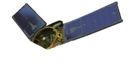
우주 탐사의 의의
우주의 기원과 구조를 이해하고, 외계 생명체의 존재 가능성을 탐색하며, 지구 환경과 인류 생존에 대한 연구를 수행하는 중요한 활동입니다.
인류에게 미친 영향
기후 변화·소행성 충돌 등 위험 요소를 감시하고 우주 자원 활용 가능성을 모색할 수 있습니다. 또한 GPS·반도체·의료 기술 등 혁신 기술을 탄생시켜 우리 생활을 편리하게 만듭니다.
개념 1 우주 탐사선은 어디까지 갔을까? 교과서 302~303쪽
태양계 천체를 탐사할 목적으로 쏘아 올린 탐사선들이 어느 천체까지 도달했는지 살펴봅시다.
태양계 탐사 지도 — 탐사선의 여정
탐사선 이름을 누르면 그 여정만 볼 수 있습니다개념 2 우주 탐사의 성과 교과서 302~303쪽
우주 탐사선
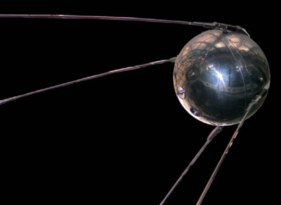
스푸트니크 1호
1957년 발사된 인류 최초의 인공위성
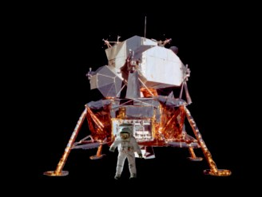
아폴로 11호
달 착륙 — 1969년 인류 최초로 달에 착륙
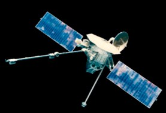
매리너 10호
수성, 금성 근접 탐사
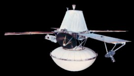
바이킹 1호
화성 표면 탐사
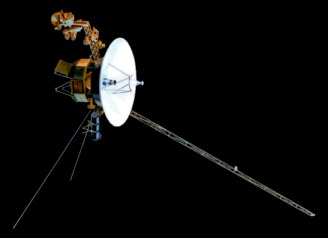
보이저 1호
목성, 토성 탐사
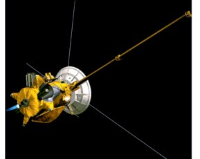
카시니호
토성 대기권 진입
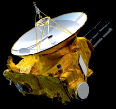
뉴호라이즌스호
명왕성 탐사
다누리호
달 탐사 — 우리나라 최초의 달 궤도 탐사선
로켓 · 인공위성
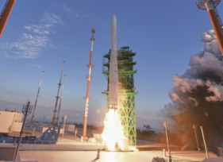
로켓
로켓의 발달로 인공위성, 우주 탐사선, 유인 우주선 등을 발사할 수 있게 되었다.
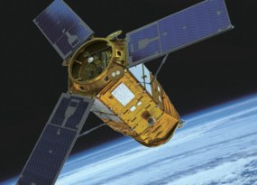
인공위성 아리랑 3A호
사용 목적에 따라 방송 통신 위성, 지구 관측 위성, 군사 위성 등이 있다.
우주 망원경 · 국제 우주 정거장
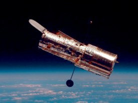
허블 우주 망원경
대기권 밖에서 별, 성단과 성운, 외부 은하 등을 관측하였다.
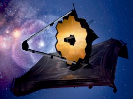
제임스 웹 우주 망원경
더욱 멀리 있는 천체들을 관측할 수 있게 되었다.
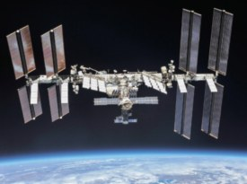
국제 우주 정거장[ISS]
다국적인 협력과 공동 연구로 우주 탐사, 과학 연구, 기술 개발 등이 이루어진다.
우주 탐사 로봇
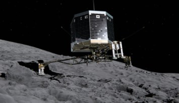
필레
최초의 혜성 탐사 로봇으로, 수십억 년 된 얼음과 먼지 혼합물에 대한 정보를 지구로 전송했다.
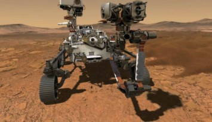
퍼서비어런스
화성의 암석과 토양을 조사하고 샘플을 채취하는 임무를 수행한다.
우리나라의 우주 탐사
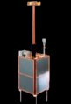
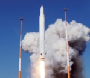
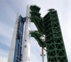
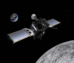
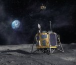
“우주 탐사와 천문학은 같은 것이다?” — 우주 탐사는 우주 공간을 직접 탐사하는 것이고, 천문학은 우주에 있는 천체를 관찰하는 것이므로 차이가 있다.
개념 3 우주 탐사 기술이 일상생활에 이용된 예 교과서 301쪽 | 그림 13 |
카드에 마우스를 올리거나 눌러 보세요. 어떤 기술인지 설명이 나타납니다.
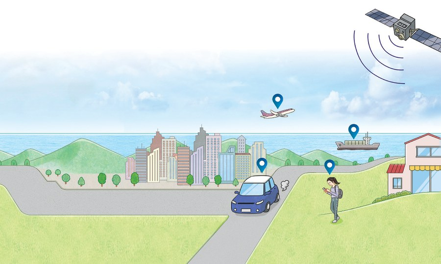
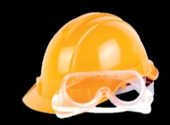
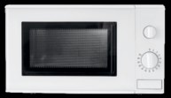
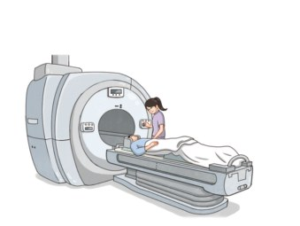
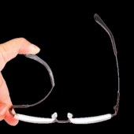
정리 핵심 정리
- 우주 탐사의 의의 : 우주에 대한 지식과 이해의 폭 확대, 혁신적인 탐사 기술을 일상생활에 이용, 지구의 기후와 환경의 변화·자원 고갈 등의 현상 이해, 다국적 우주 탐사 프로젝트를 통한 국가 간 협력 촉진
- 우주 탐사가 우리 삶에 미친 영향 : 새로운 과학 기술의 개발과 발전, 우주 탐사에 활용된 기술의 실생활 이용(GPS, MRI, CT, 폴리카보네이트, 전자레인지, 기능성 옷감 등)
- 우주 탐사의 성과 : 우주 탐사선, 로켓·인공위성, 우주 망원경·국제 우주 정거장, 우주 탐사 로봇, 우리나라의 우주 탐사
확인 이것만은 & 문제로 확인
과학 유용성 서술형
그림에 제시된 것 외에 우주 탐사 기술이 일상생활에 쓰이는 예를 두 가지 이상 서술하시오.
스스로 정리하기
인류는 끊임없이 우주를 ㅌ ㅅ하고 있으며, 이로부터 발달한 과학 기술은 우리의 삶에 유용하게 쓰인다.